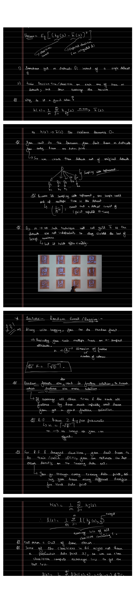

Bagging & Random Forests
A single deep tree is a high-variance learner: retrain it on a slightly different sample and the boundaries jump around. Bagging attacks that variance directly, by averaging many trees, and random forests add one twist that makes the averaging far more effective.
The Variance of a Learner
For a learner trained on a random dataset $D$, the variance at a point $x$ is how much its prediction wobbles around its own average over datasets:
$$\mathrm{Var} = \mathbb{E}_{D}\Big[\big(h_D(x) - \bar h(x)\big)^2\Big], \qquad \bar h(x) = \mathbb{E}_D\big[h_D(x)\big].$$If somehow $m$ independent datasets $D_1, \dots, D_m$ were available, training a tree on each and averaging would give
$$h(x) = \frac{1}{m}\sum_{j=1}^{m} h_{D_j}(x) \;\xrightarrow[m\to\infty]{}\; \bar h(x),$$and as $h(x) \to \bar h(x)$ the variance collapses to zero. Averaging many independent models is the cleanest variance-reduction tool there is.
Bootstrap: Manufacturing Datasets
The catch is that there is only one dataset, not $m$. Bagging fabricates the missing datasets by sampling with replacement (the bootstrap): draw $N$ points from the original $N$, allowing repeats, to form each new dataset. A point can land in a sample several times, and others are left out entirely. The bootstrapped datasets are not truly independent, so they technically violate the conditions of the law of large numbers, but in practice the averaging still drives the variance down sharply. The animation grows a bagged ensemble and watches a jagged, high-variance fit settle into a smooth one.
▶ Averaging Bootstrapped Trees Reduces Variance
Each thin curve is one tree trained on a bootstrap sample: jagged and high-variance. The bold green curve is the running average over all trees so far; it converges toward the true signal (dashed) as more trees are added.
Random Forests
Bagged trees are still correlated, because a few strong features dominate the top split in almost every tree. Random forests break that correlation by sub-sampling features: at each tree (and split) only $k$ randomly chosen attributes are considered, with
$$k = \lceil \sqrt{D}\, \rceil,$$where $D$ is the number of features. Decorrelating the trees makes the average sharper. A random forest has two main knobs: the feature count $k = \lceil\sqrt D\rceil$, and the number of trees $m$, taken as large as compute allows.
Out-of-Bag Error
Bootstrapping hands over a free, honest test estimate, so a forest needs no separate validation split. Because each tree is trained on a bootstrap sample, every training point $x_i$ was left out of some of the trees. Evaluate $x_i$ using only the trees that never saw it, and average:
$$\ell(x_i) = \frac{1}{|\{\,j : (x_i,y_i)\notin D_j\,\}|}\sum_{j:\,(x_i,y_i)\notin D_j} \ell\big(h_j(x_i),\, y_i\big).$$Let $z_i$ count the trees not trained on $(x_i, y_i)$. Averaging the loss over those $z_i$ trees gives the out-of-bag (OOB) error, an unbiased estimate of test performance obtained while training on all the data.
Where Forests Shine (and Where They Do Not)
- Random forests are strong on tabular data and especially good for regression.
- They are not a good fit for images, where convolutional models dominate.
- Along with Gaussian processes, forests are one of the few methods that supply an uncertainty estimate for a regression prediction.
- Bagging reduces variance drastically while leaving bias essentially unchanged.

Bagging fixed variance without touching bias. Part 6 takes the opposite route: boosting adds trees in sequence to drive bias down, and works out AdaBoost in full.